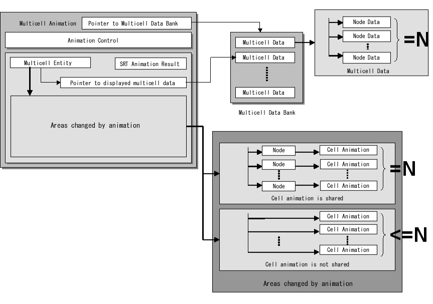

Multicell Animation Overview
Conceptual Diagram

Description
Multicell animation plays back multicell animations created with NITRO-CHARACTER. Multicell animation uses the internal Animation Controller to animate multicells. Multicells are composed of multiple cell animations.
Multicell Animation Internal Data
Pointer to the Multicell Data Bank
The pointer to the multicell data bank loaded to the main memory is stored. The multicell data bank is static data and will not be rewritten. The multicells used by the multicell animation must be included in the multicell data bank designated by this pointer.
Pointer to the Displayed Multicell Data
The pointer to the multicell currently being displayed on the screen by animation playback is stored. The multicell designated by this pointer exists in the multicell data bank designated by the pointer to the multicell data bank. It exists as an internal member of the multicell entity being displayed.
SRT Animation Results
The multicell position, rotation, and scale changed by animation playback is stored.
The Multicell Entity
This concept expresses the entity of the multicell currently being displayed. The pointer to the displayed multicell data is stored internally. The entity also maintains information updated by the animation.
Areas Updated by Animation
The multicell entity maintains the information updated by the animation. Specifically, the information consists of the cell animation entities comprising the multicell animation and the nodes that store the location of the entities.
There are two types of data structures for this information during runtime: one that shares cell animation and one that does not.
The user can select the most suitable data structure with an option passed to the initialization function.
When the format where cell animations are shared has been selected, the same cell animation playback is shared by multiple nodes (i.e., the total number of nodes N >= number of cell animations).
Furthermore, node states, such as SRT parameters and the visibility flag, are not maintained.
These factors create the following characteristics.
The memory capacity required for creating an entity is small.
The processing load for animation updates is small.
The number of affine parameters used is small (affine parameters are shared among the nodes that render the same cell animation).
These characteristics are more evident when the same cell animations are used several times in a multicell.
On the other hand, when the format where cell animations are not shared has been selected, cell animation entities are allocated for each node separately (i.e., the total number of node N == number of cell animations).
Furthermore, a data region is maintained to store the node states.
This organization allows the user program to overwrite node information and cell animation states (location, playback animation setting).
If the user program does not need to overwrite this data, use the format where cell animation is shared.
Nodes
Nodes are containers for storing information about rendering data. The pointer to the rendering data, rendering object position on the virtual screen, rotation, scale, affine conversion parameter setting information, etc. is stored in the node. They are used in the library as the compositional elements of the multicell entity.
See Also
None.
Revision History
2005/01/31 Added "Areas Updated by Animation" to the description
2004/12/06 Initial version.
CONFIDENTIAL